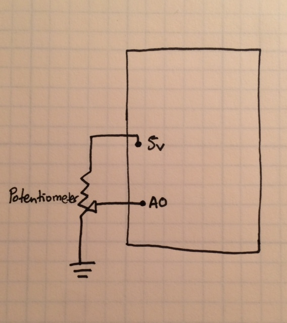
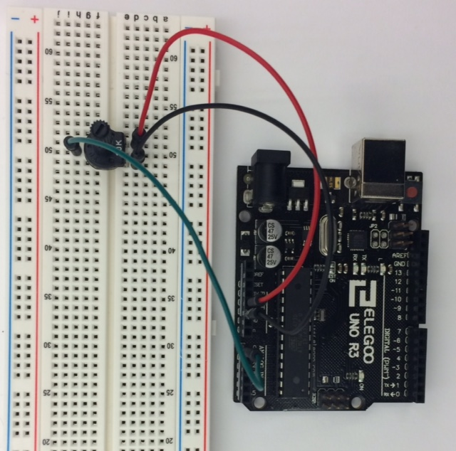
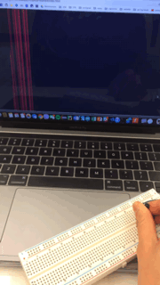
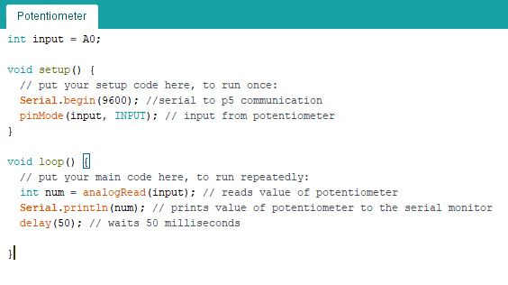
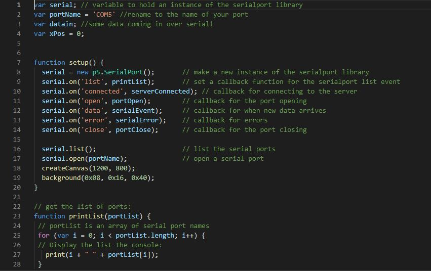
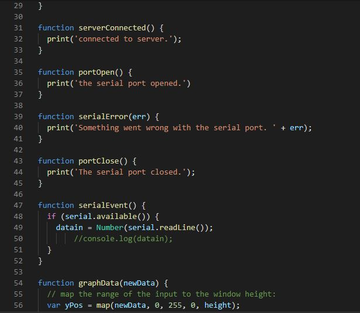
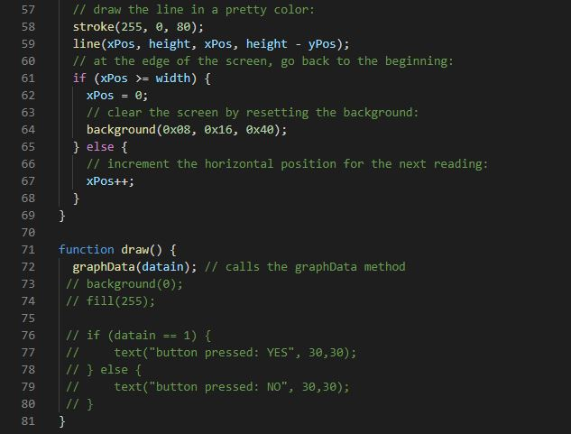

Assignment 6: Datalogging
Schematic
 This circiut does not require any calculations. The poteniometer is a resistor of varying values depinding on its postion.
GIF and Pictures
  In this circuit input from a potentiometer is read via pin A0 and displayed visually via the serial monitor.
Code Snippet
Arduino Code  sketch.js code from the example used in class graphs the data from the Arduino potentiometer to a website.   